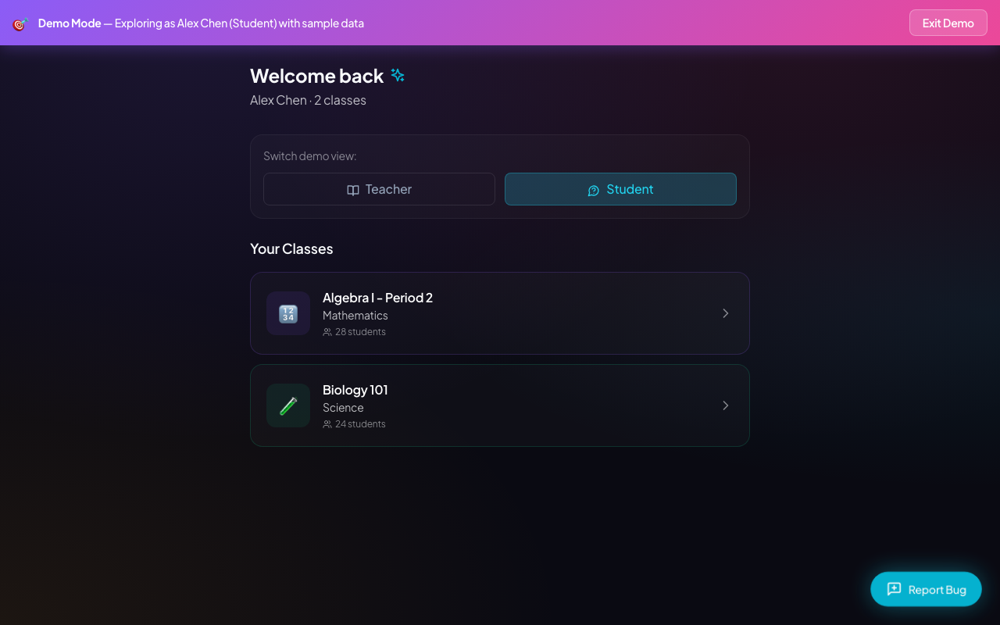
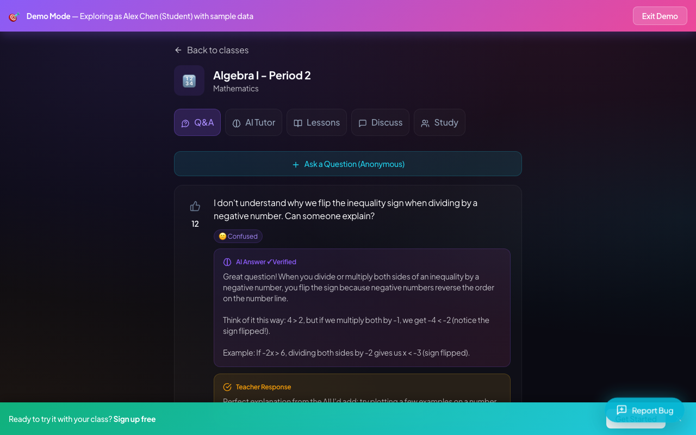
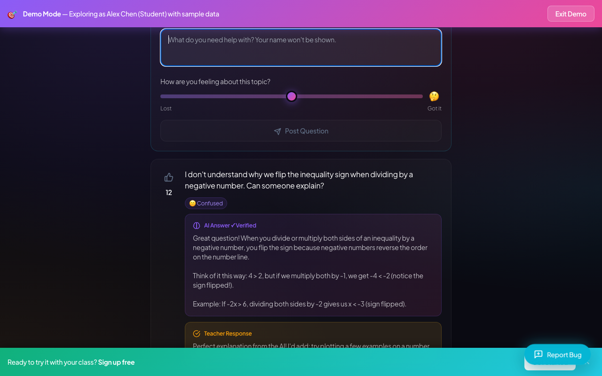
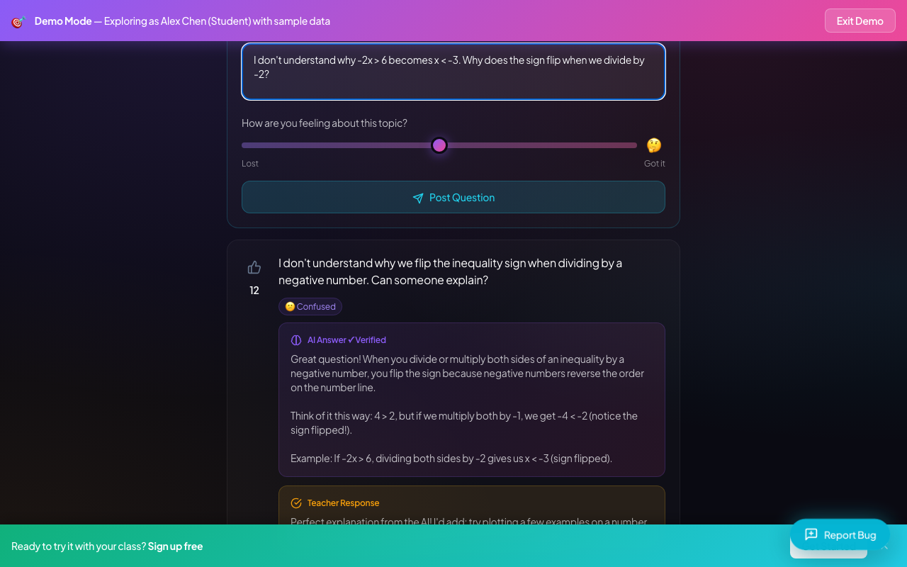
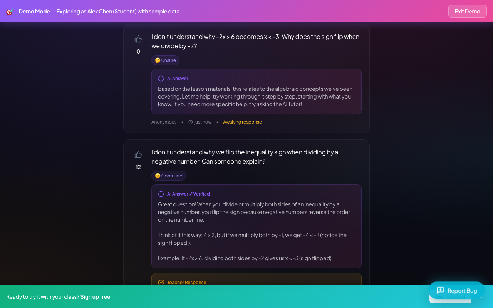
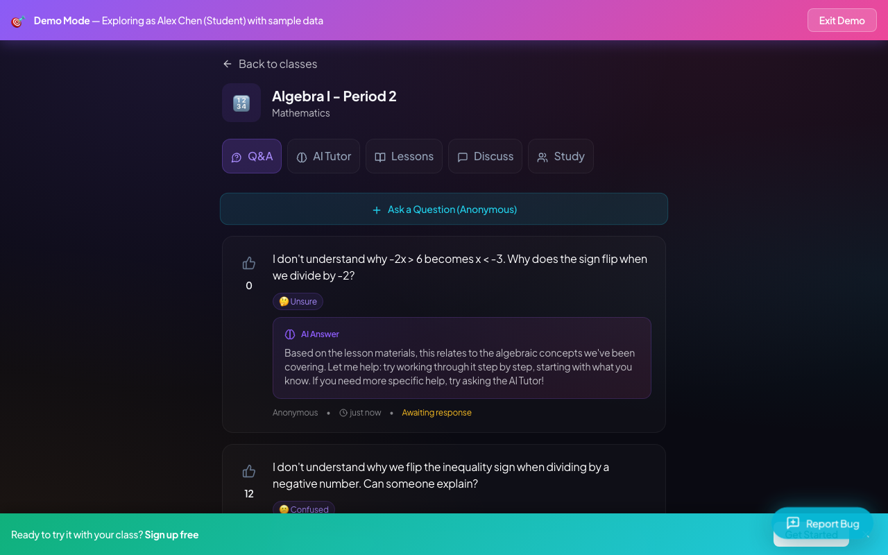
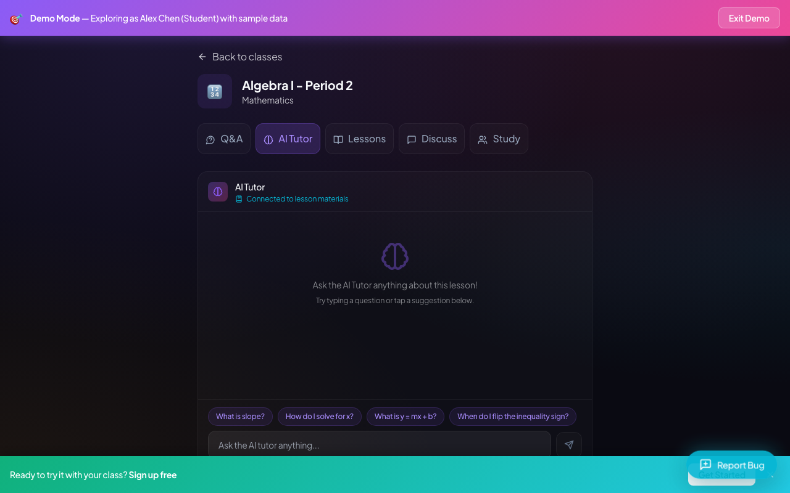
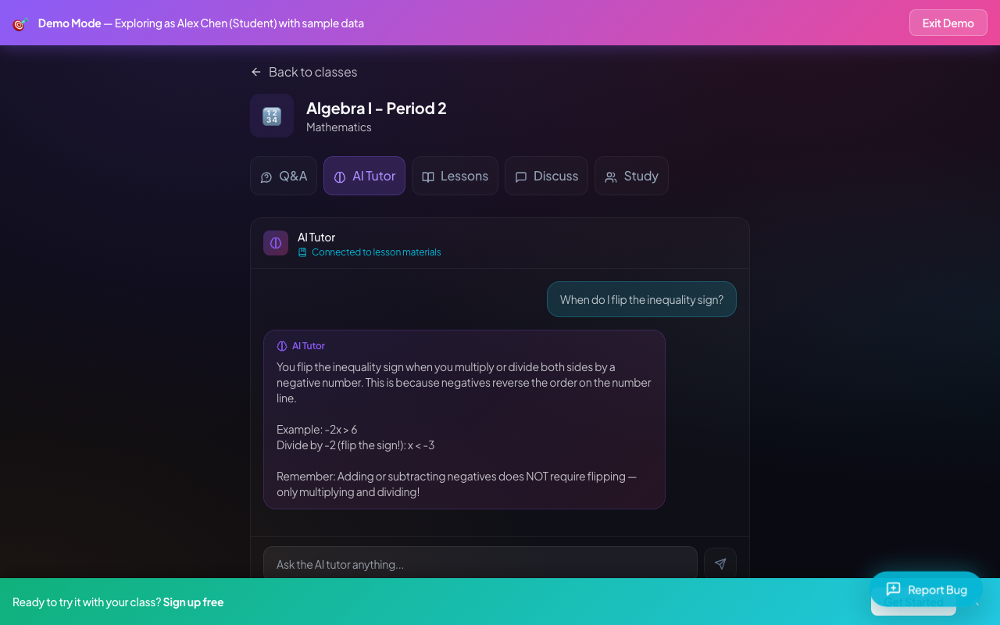

I'm in the demo. I need to find my Algebra I class to ask about that inequality problem. There it is, Period 2. Let's see if this actually helps.

I'm in the Algebra class now. This 'Ask a Question' button looks like exactly what I need to get help without everyone knowing it's me.

I'm logged in now. It's reassuring that my name stays private. I'm going to type in my question about why the inequality sign flips.

Got my question typed out. I'm going to post this anonymously and see if the AI can actually explain why the sign flips.

My question posted, but the AI just gave a generic 'work through it step by step' answer. That doesn't help me with the negative sign rule at all. It says to try the AI Tutor, so let me find that tab.

That AI answer was completely useless. It just told me to try step by step and ask the AI Tutor. Fine, let's see if the actual AI Tutor tab can explain the sign flipping.

The Q&A answer was useless, but the AI Tutor has a button right here for my exact problem. 'When do I flip the inequality sign?' Let's see if this actually explains it.

Whoa, it actually gave me the exact example I was stuck on! 'Divide by -2, flip the sign.' This is so much better than waiting until tomorrow. I'm definitely using this.